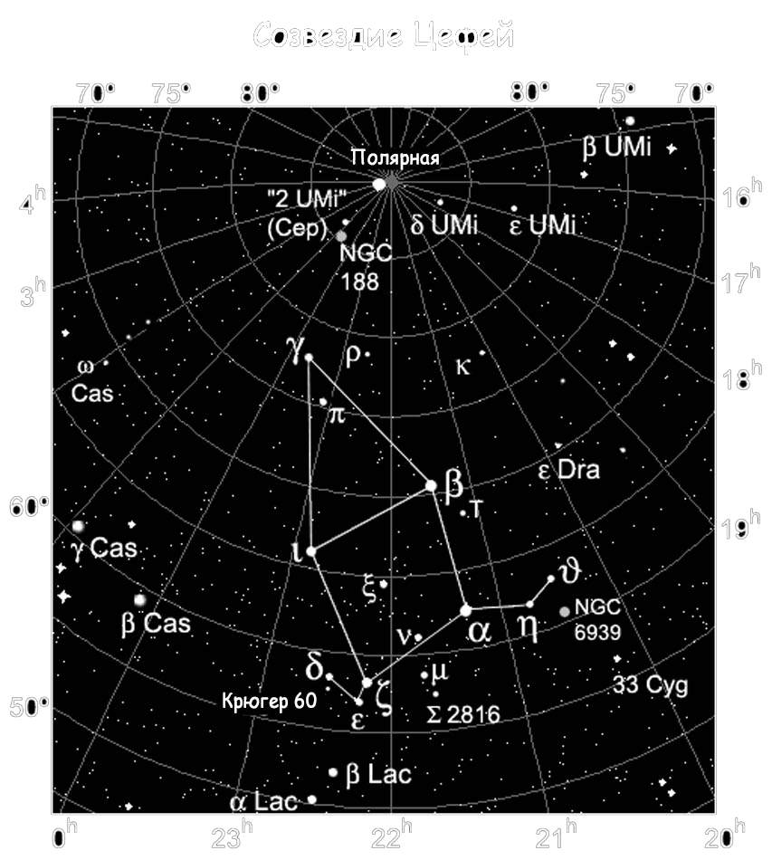

|  |
Где и когда наблюдать созвездие ЦефейЕсли же вы хотя бы немного знакомы с картой звездного неба, то найти созвездие Цефей можно, ориентируясь по его ближайшим соседям: Малой Медведице, Кассиопее, Ящерице, Драконе и Лебеде. Данное созвездие лишено ярких звезд: лишь восемь из них обладают звездной величиной больше, чем четвертая. Тем не менее, ясной безлунной ночью каждый может увидеть, как минимум 60 звезд Цефея. Наилучшие условия для его наблюдения в южном полушарии наступают в июле-сентябре. Однако ввиду того, что Цефей сильно склонен к северу, например, на территории России, его хорошо видно на всей территории целый год. Данное созвездие занимает на небе скромную площадь в 588 квадратных градусов. Любопытный факт: именно в созвездие Цефей в недалеком будущем сместится мировой северный полюс. Данное явление объясняется прецессией земной оси как раз в направлении описываемого созвездия. Так, уже в 3100 году поблизости полюса займет свое положении звезда гамма Цефея (или Альраи). Бета Цефея (либо Альфирк) приблизится к северному полюсу в период 5100-6500 г.г., а уже в 8300 году роль полярной звезды перейдет к альфа Цефея – звезда Альдерамин. С нее мы и начнем разговор о самых интересных звездах рассматриваемого созвездия. |